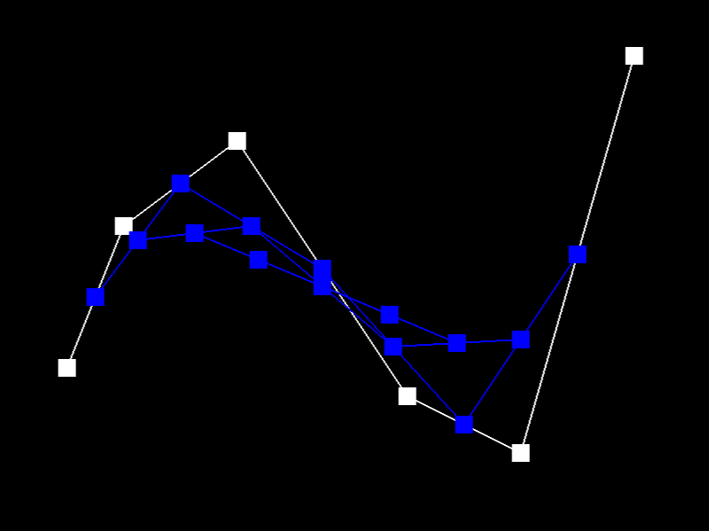
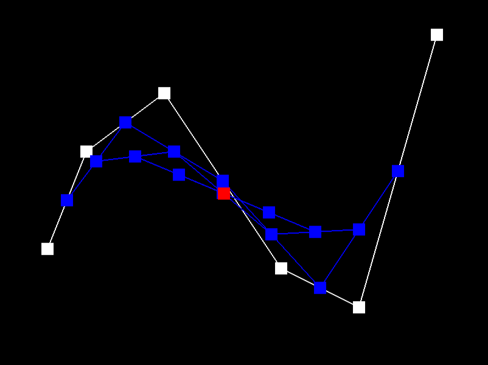
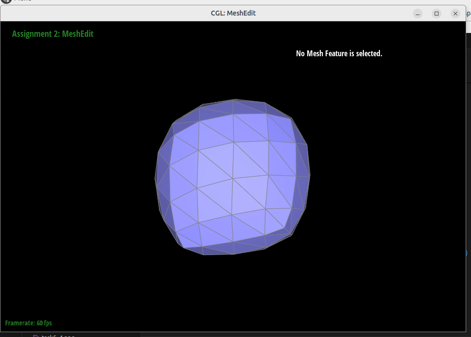

Overview
In this homework, I implemented de Casteljau’s algorithm for Bezier curves and surfaces, area-weighted vertex normals to allow for Phong shading, the remeshing operations edge flip and edge split, and loop subdivision for mesh upsampling. From this assignment, I learned how useful and prevalent linear interpolation is in computer graphics. It’s used in Bezier curves and surfaces and was used a lot in the last homework assignment as well. I also gained an in-depth understanding of how meshes are represented as well as an appreciation for how meticulous one needs to be when working with meshes. For example, in order to perform a seemingly simple remeshing operation like edge flip, there are so many pointer reassignments that are necessary in order to make sure the mesh is correct after the operation. One wrong reassignment and every operation afterwards is greatly impacted.
Section I: Bezier Curves and Surfaces
Part 1: Bezier Curves with 1D de Casteljau Subdivision
Briefly explain de Casteljau's algorithm and how you implemented it in order to evaluate Bezier curves.De Casteljau’s algorithm is an algorithm that is used to evaluate bezier curves. Given some control points, de Casteljau’s algorithm linearly interpolates each two adjacent control points using a specified parameter t in order to derive the next level’s control points. This process is repeated until a singular control point is derived. And this entire process is repeated for different values of t so that the derived singular control point for each t value can be connected to form the final bezier curve. In this homework, I implemented de Casteljau’s algorithm by filling in the BezierCurve class’s evaluateStep function, which is a recursive function that evaluates the next level of control points when given a list of control points and parameter t. In order to implement this function, I iterated through the given list of points, and for each pair of adjacent points, I linearly interpolated the two points using the given parameter t and then inserted the evaluated point into a list of new control points that would be returned at the end of the function.
Below is an image of 6 control points that I chose in order to demonstrate how de Casteljau’s algorithm works to evaluate the Bezier curve.
Each image below shows each step / level of the evaluation from the original control points down to the final evaluation point. The last image shows the evaluated Bezier curve as well.

|

|

|

|
|

|
|
Finally this image below is of a different Bezier curve that I obtained by moving the original 6 control points around and then altering the value of the parameter t.
Part 2: Bezier Surfaces with Separable 1D de Casteljau
Briefly explain how de Casteljau algorithm extends to Bezier surfaces and how you implemented it in order to evaluate Bezier surfaces.De Casteljau’s algorithm can also be extended to Bezier surfaces. Given a matrix of 3D points, one can think of each row of the matrix as a list of control points that can be evaluated to a Bezier curve. Then with each of these Bezier curves, de Casteljau’s can be applied again in order to derive a Bezier surface. The below diagram from lecture provides a helpful visualization of this process.

In order to implement de Casteljau’s algorithm to evaluate Bezier surfaces, I implemented a function called evaluateStep that behaves very similarly to the evaluateStep function I mentioned in the previous task; however, this time it operates on 3D points rather than 2D points. It takes a list of 3D points and linearly interpolates adjacent points using a parameter t. The resulting points are returned as a list. Then I implemented a function called evaluate1D that fully evaluates de Casteljau’s algorithm instead of just performing one step of the algorithm like evaluateStep does. This function takes in a list of 3D points and a parameter t and calls the evaluateStep function on the list of points. With each call, the returned list of points decreases in length by 1. This is repeated until the list of points has a length of 1. At this point, the algorithm is complete and the final evaluated point is returned. Finally, I implemented a third function called evaluate which evaluates a Bezier surface (or patch) given a matrix of control points and two parameters u and v. evaluate1D is called on each row of the matrix with the parameter u, and each returned point for each row is added to a list of intermediate points. evaluate1D is then called once more on this list of intermediate points with the parameter v in order to evaluate the final point on the Bezier surface. These three functions I implemented work together to evaluate Bezier surfaces.
Below are images of a teapot that is evaluated using my implementation of Bezier surfaces. The image on the left has the wireframe toggled on, and the image on the right has the wireframe toggled off.Section II: Triangle Meshes and Half-Edge Data Structure
Part 3: Area-Weighted Vertex Normals
Briefly explain how you implemented the area-weighted vertex normals.To implement area-weighted vertex normals, I got a list of all the positions of the vertices around the given vertex. Then I iterated through this list of vertex positions in adjacent pairs so that I have the three vertices of each face that surrounds the given vertex. With these groups of three vertices that represent each face that surrounds the given vertex, I calculated the area of each face. To calculate the area of a face, I first subtracted the given vertex from the two other vertices in order to derive two vectors that go along the face and share the same initial point (the given vertex). These two vectors are represented by a and b in the image below. With these two vectors, I took their cross product to get the orthogonal, which is represented by the purple vector in the diagram below. Then I calculated the magnitude of this orthogonal which equates to the area of the parallelogram formed by the two derived vectors a and b. Finally, I divided the magnitude by 2 in order to get the area of the triangle / face that is formed by the three vertices.

Then to get the area-weighted normal of each face, I multiplied each face’s orthogonal by its calculated area, since each face’s orthogonal is a normal of the face. I then added up all these area-weighted normals and called the resulting vector sum. I then normalized the vector called sum by dividing it by its magnitude.
The only issue I ran into while implementing area-weighted vertex normals is I didn’t multiply the area-weighted normal of each face by negative 1. This caused each of the computed normals to point towards the interior of the model instead of the exterior, which resulted in my teapot looking extremely dark.
Below are images of a teapot. The images on the left are the teapot with flat shading which does not use area-weighted vertex normals, and the images on the right are the teapot with Phong shading which does use area-weighted vertex normals. The images on the top row have the wireframe toggled on and the images on the bottom have the wireframe toggled off. Comparing the teapot images, it is clear that Phong shading does a better job of shading smooth surfaces.|
|
|
|
|
|
Part 4: Edge Flip
Briefly explain how you implemented the edge flip operation and describe any interesting implementation / debugging tricks you have used.I implemented the edge flip operation by first getting and storing all the halfedges, faces, vertices, and edges that make up the two faces that touch the edge that is going to be flipped. I also retrieved and stored the halfedges that are twins of the halfedges 1b, 1c, 2c, and 2b (refer to the diagram below). While getting and storing all of these elements, I also checked if either of the two faces touching the given edge are boundary faces or not. If either of them was, then the function just returned without doing anything further. After storing everything, I then assigned all the fields of all the elements to their new values according to the diagram I drew below. However, I specifically set the elements in the order of vertices, edges, faces, and then halfedges. Finally, I returned the initially given edge that has now been flipped.

Below are a sequence of images that show a teapot going through a series of edge flips. The images on the left show an edge highlighted in magenta. This indicates that that edge will be flipped. The images on the right then shows the edge after it has been flipped.
The top image below shows the teapot after many edge flips. The image on the bottom left shows the same teapot with the same sequence of edge flips but with Phong shading toggled on. And finally the image on the bottom right is the same as the image on the bottom left but with the wireframe toggled off.
|
|
|
Part 5: Edge Split
Briefly explain how you implemented the edge split operation and describe any interesting implementation / debugging tricks you have used.I implemented the edge split operation by first getting and storing all the halfedges, faces, vertices, and edges that make up the two faces that touch the edge that is going to be flipped. I also retrieved and stored the halfedges that are twins of the halfedges 1b, 1c, 2c, and 2b (refer to the diagram below) as well as the isNew and isSplit values of the 4 outer edges (AC, CD, AB, and BD). While getting and storing all of these elements, I also checked if either of the two faces touching the given edge are boundary faces or not. If either of them was, then the function just returned without doing anything further. After storing everything, I created the 6 new halfedge elements that would be created in the process of splitting an edge and assigned all their fields to random values. Next, I created the new vertex M that would be positioned in the middle of the edge being split. I set its halfedge field to halfedge 1a and set its position field to the average of the positions of the vertices C and B. Then I assigned the 4 other vertices' halfedge fields following the diagram below. Next, I created the 3 new edges AM, BM , and DM. And then for all 8 edges in the diagram, I assigned their halfedge fields accordingly. For their isNew fields, I set edges AM and DM to true, BM and CM to false, and the 4 outer edges to the original outer edges’ isNew values that I had stored earlier. And then for their isSplit fields, I set AM, BM, CM, and DM to true and the 4 outer edges to the original outer edges’ isSplit values that I had also stored earlier (Note: setting the edges’ isNext and isSplit fields is to support the implementation of loop subdivision that I implement in task 6). Next, I created the two new faces and assigned all 4 faces’ halfedge fields according to the diagram below. Then I assigned all 12 halfedges’ fields according to the diagram below. And then I assigned the 4 outer halfedges’ twin fields to their respective twin halfedges shown in the diagram below. And finally, I returned the newly created vertex M.

In the below 4 images, the top two images are the teapot without any edge splits. The left image has smooth shading off, while the right image has smooth shading on. The bottom two images show the teapot after many edge splits. Again the left image has smooth shading off, and the right image has smooth shading on.

|
In the below 5 images, the top two images are the teapot without any edge splits or edge flips. The left image has smooth shading off, while the right image has smooth shading on. The bottom two images show the teapot after many edge splits AND edge flips. Again the left image has smooth shading off, and the right image has smooth shading on. The fifth image is the same as the bottom right image but with the wireframe toggled off.

|
Write about your eventful debugging journey, if you have experienced one.
After I initially implemented this task and tried to split some edges, whenever I split an edge, one of the outer edges of the two touching faces would disappear. And when I tried to switch smooth shading on, the program would freeze and then crash after a couple of minutes. After rethinking about my implementation, I realized that I had not set the outer edges’ (AC, CD, AB, BD) halfedge fields and the outer halfedges’ (twin1b, twin2c, twin1c, twin2b) twin fields to their new values. Once I changed my code to set these elements’ fields to their new values, edge splitting worked as intended and the program would not crash whenever I tried to switch smooth shading on.
Part 6: Loop Subdivision for Mesh Upsampling
Briefly explain how you implemented the loop subdivision and describe any interesting implementation / debugging tricks you have used.In order to implement loop subdivision, I implemented 5 steps in the upsample function. For the first step, I iterated through all the vertices in the mesh and calculated the new position for each of these vertices using the formula shown below. I stored the calculated new position in the newPosition field for each vertex and set each vertex’s isNew field to false.


For the second step, I iterated through every edge in the mesh and calculated the position of the new vertex that would be created at the midpoint of each edge once edge split is eventually called on every edge in the mesh. I calculated these new positions using the formula shown below. I stored these calculated new positions in each edge’s newPosition field and set each edge’s isNew and isSplit fields to false.


For the third step, I again iterated through every edge in the mesh, but this time, I checked if each edge’s isSplit field was set to false. If it was, that meant that the edge was a part of the original mesh. So, I then called splitEdge on the edge and set the returned new vertex’s isNew field to true and its newPosition field to the value stored in the edge’s newPosition field.
For the fourth step, I iterated through all the edges in the mesh once more, but this time, I checked if each edge’s isNew field was set to true. If it was, that meant that the edge was created from an edge split and potentially needed to be flipped. In order to determine if the edge needed to be flipped, I then checked if the edge was connecting an old vertex with a new vertex. If it was, then I called flipEdge on the edge.
Finally for the fifth step, I iterated through all the vertices in the mesh and set each vertex’s position field to the value stored in its newPosition field.
In addition to implementing these five steps in the upsample function, I also added a boolean field to the Edge class called isSplit in order to indicate whether an edge is a part of the original mesh or not. I check this flag in step 3 of my implementation of upsample in order to determine whether to split an edge or not since I only want to split edges that haven’t been split before (edges that are a part of the original mesh). I then also altered the splitEdge function that I implemented in task 5 to set all edges’ isSplit and isNew fields accordingly.
After I initially implemented this task, when I tried to perform loop subdivision on a mesh, the program would seem to stall or freeze for a very long time before eventually crashing. I suspected there was probably an infinite loop somewhere in my implementation and re-evaluated my code. I realized that in step 3 of my implementation, I wasn’t checking whether an edge should be split or not before calling splitEdge. I knew I needed a way to determine whether an edge should be split or not, so I added the isSplit field to the Edge class and altered my implementation of the splitEdge function to set all edges’ isSplit fields accordingly. After implementing this change, loop subdivision worked correctly on all meshes.
The below 5 images show an icosahedron with each subsequent image showing the effect of performing another iteration of loop subdivision on the mesh. From these images, it seems that loop subdivision smooths out and rounds sharp corners and edges. As you can see, the fifth image of the icosahedron looks almost spherical.In order to try to reduce this effect of sharp corners and edges being rounded out, I split edges that were contained within the 5 front faces of the icosahedron before performing any iterations of loop subdivision on the mesh. The top left image below shows all the newly created edges on the 5 front faces of the icosahedron after I split the contained edges multiple times. After pre-splitting these edges, I performed loop subdivision on the mesh multiple times, and the top right image shows the resulting mesh. As you can see, it seems that the edges and corners of the 5 front faces maintained some of their sharpness. And looking at the bottom left image, which shows the mesh from a different angle, you can see that the other faces where I didn’t pre-split any edges have completely rounded out. There are no defined edges or corners. The bottom right image shows the mesh with smooth shading toggled on and the wireframe toggled off. You can see that the faces where I performed no pre-splitting are completely rounded out and the faces where I did perform pre-splitting still have their edges and corners.
The below 5 images show a cube with each subsequent image showing the effect of performing another iteration of loop subdivision on the mesh. Looking at the images, you can see that the cube becomes asymmetric with repeated subdivisions.
|  |

In order to make the cube subdivide symmetrically, I pre-split each of the edges going diagonally across each of the cube’s 6 faces so that each face had 4 edges in an X shape going across it. The leftmost image below shows what the cube looked like after I performed pre-splitting. With this pre-splitting applied, after performing multiple iterations of loop subdivision on the cube, it subdivided symmetrically. The middle image below shows what the subdivided cube looked like from a front-facing angle, and the rightmost image below shows the subdivided cube looked like from a side-facing angle.
The pre-splitting I performed allowed the cube to subdivide symmetrically because each face of the cube (referring to the 6 faces of a standard cube; not “faces” in mesh terminology) has 4 identical faces (referring to “faces” in mesh terminology) arranged in a way that makes each face (referring to the faces of a standard cube) symmetrical along the x-axis and y-axis. So when subdivision is applied to each of the faces of the mesh (referring to “faces” in mesh terminology), each face of the cube will remain symmetrical. Without the pre-splitting, each face of the cube is not symmetrical along the x-axis and y-axis, so when subdivision is applied, each face of the cube remains asymmetrical, making the entire cube asymmetrical.